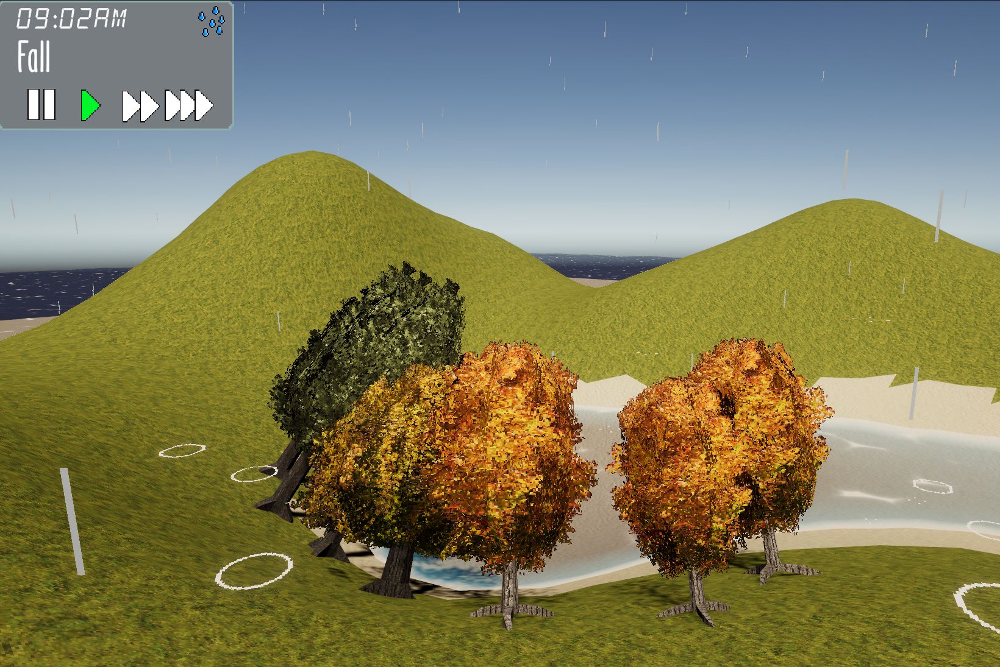
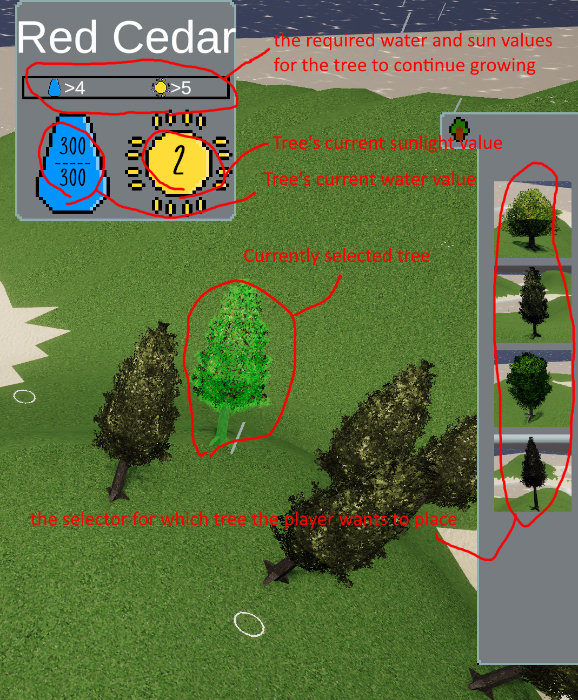
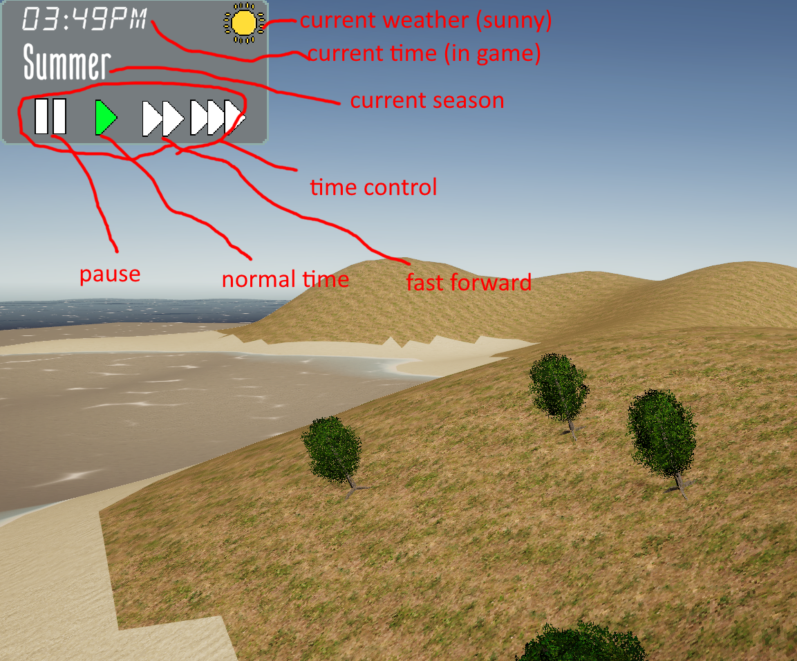
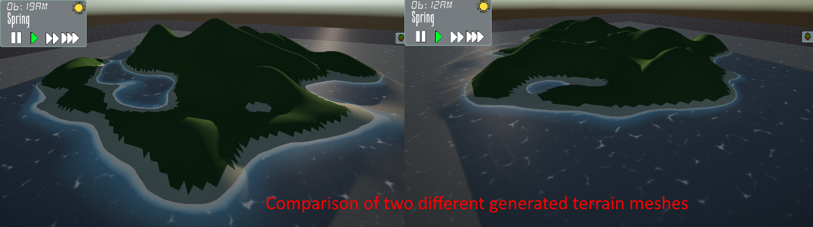

Purpose
This game was made for a class at University Of Washington Bothell. It was made by me and 3 other team members. It is a simulation game of planting trees in a forest while keeping track of multiple factors that affect a tree’s chance of survival. For example a tree that is planted in the shade will not grow as fast as trees in the sun, because it is blocked from the sun.
Outcomes
Overall the game was successful as a learning experience. During this project we as a team learned a lot about communication and collaboration. The final product has 4 different tree types the player can plant. Additionally, passage of time is tracked in the game and it affects the time of day, current season and weather, all of which affect a tree’s light level and water level, which affects the tree’s growth rate. It was a success as a learning project and in terms of the features it implemented.
 Procedural Terrain Generation
The terrain in the game is generated randomly. Using a noise map technique to generate the height of each vertex of the terrain mesh and then properly assigning materials to the mesh to generate a random terrain.
Shortcomings
Main shortcomings of this game is that it does not provide the user with enough information. The values that a tree gets for the sun and water are almost magic numbers. The game calculates them but does not tell the user how they are calculated. With the intention of the game being about how the trees react to the environment and each other, the lack of information makes it hard for the player to make educated decisions on where to place new trees.